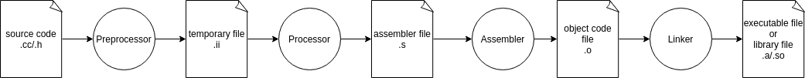

Compilation Optimization of C++ Project¶
Why Doing This Work¶
- We change our platform from
x86toarm, the cpu performance is getting weaker; - Every time we debug on the vehicle, we suffer from the slow compilation time.
Compilation Process¶
In general, the compilation of a C++ program involves these four steps:
- Preprocessing
- Compiling
- Assembling
- Linking

Preprocessing¶
Preprocessor directives are one of the unique feature of C++. Before a C++ program gets compiled by the compiler, the source code gets preprocessed by the preprocessor.
All preprocessor directives in C++ begin with
#, and they do not need to end with a semicolon(;) because this is not a statement in C++.
There are different preprocessor directives that perform different tasks.
- Inclusion Directives:
#include: specifies the files to be included, especially header-file
- Macro Definition Directive:
#define: define a macro substitution#undef: undefine a macro
- Conditional Compilation Directive:
#if: test a condition#elif: else if condition#endif: end of#if#ifdef: used to test for macro definition#ifndef: used to test for whether a macro is not defined#else: it provides an alternative option when#iffails
- Other directives:
#error: syntax "#error err_msg", shows the given error message and renders the program ill-formed#line: Supplies a line number for compiler message#pragma: Supplies implementation-defined instructions to the compiler
Some macros C++ predefined are:
__LINE__: this contians the current line number of the program when it is being compiled__FILE__: this contians the current file name of the program when it is being compiled__DATE__: this contians the string of the formmonth/day/yearthat is the date of the translation of the source code into object code__TIME__: this contians the string of the formhour:minute:secondthat is the time at which the program was compiled
The processor obeys directives defined in file to:
- replacing macros
- expanding include files
- expanding conditinal code
- removing comments
You can use g++ -E to get preprocessed file with the extension .i or .ii.
Compiling¶
Compiling is the second step. It takes the output of the preprocessor and generates assembly language, an intermediate human readable language, specific to the target processor. The compiler parses the pure C++ source code (now without any preprocessor directives) and converts it into assembly code. Compilers usually let you stop compilation at this point. This is very useful because with it you can compile each source code file separately. The advantage this provides is that you dont need to recompile everything if you only change a single file. It's at this stage that "regular" compiler errors, like syntax errors or failed overload resolution errors are reported.
You can use g++ -S to get compiled file with the extension .s.
Assembling¶
After compiling, we get the assembly code. Then the assembler will translate the assembly code into machine code producing actual binary file in some format(ELF, COFF, a.out, etc.). This object file contains the compiled code(in binary form) of the symbols defined in the input. Symbols in the object files are referred to by name.
Object files can refer to symbols that are not defined. This is the case when you use a declaration, and don't provide a definition for it. The compiler doesn't mind this and will happily produce the object file as long as the source code is well-formed.
You can use g++ -c to get assembled file with the extension .o.
Linking¶
The linker is what produces the final compilation output from the object file that compiler generated. The output of linker can be:
- shared library: it doesn't add the library code to the output, so it has the smallest file size;
- static library: it add all the library code to the output, which makes its larger size;
- executable file: it combine all the binary file to an executable, and has the largest file size.
While linking, the linker links all the boject files by replacing the references to undefined symbols with the correct addresses. Each of these symbols can be defined in other object files or in libraries. If they are defined in libraries other than the standard library, you need to tell the linker the path of them.
At this stage the most common erros are:
- missing definitions, which means that either the definitions don't exist or the object files or libraries they reside were not given to the linker
- duplicate definitions, which means that the same symbol was defined in two different object files or libraries
Optimization Methods and Results¶
The origin compilation time:
| compile step | preprocessing | compiling | assembling | linking | total |
|---|---|---|---|---|---|
| time(s) | 0.337 | 54.403 | 3.741 | 8.272 | 66.416 |
Compile what we used¶
In prediction module, we have three parts of code:
- onboard: which runs on our computing platform and supports for auto-driving system;
- offboard: which contains tools and deep-learning model trainers and runs on our develop PC;
- unittest: which is the unit-test case of above parts.
In our previous work we compile all of three parts with a bash script. The file tree is like this:
1 2 3 4 5 6 7 8 | |
1 2 3 4 | |
But when we develop new features or fix bugs, what we want is to varify our code quickly, it's no need to build offboard or unit_test code.
Now we split the code into three parts and just compile the part we interested. The file tree is like this:
1 2 3 4 5 6 7 8 9 10 11 12 13 14 15 16 | |
At the top level of repo, we use three flags to define which part of code we want to compile in CMakeLists.txt:
1 2 3 4 5 6 7 8 9 10 11 12 13 14 15 16 | |
In bash script file, we choose what we want to build:
1 2 3 4 5 6 7 8 9 10 11 12 13 14 | |
Result:
| Before optimization | After optimization | |
|---|---|---|
| time(s) | 81 | 66 |
Compiler options¶
A compiler is a special program that processes statements written in a particular programming language and turns them into machine language or "code" that a computer's processor uses. In linux platform, we use GCC to compile our code. When you invoke GCC, it normally does preprocessing, compilation, assembly and linking.
Parallel compilation¶
In Linux platform we use GNU/Make tool to compile code. When we execute make command, we should use the -j option to define parallel jobs. In the bash script we use $(nproc) to get the number of cpu core as the -j parameter and increase the compilation performance.
1 | |
Result:
Before optimization(j8) |
After optimization(j12) |
|
|---|---|---|
| time(s) | 70 | 66 |
Optimize options¶
These options control various sorts of optimizations. Without any optimization option, the compilers goal is to reduce the cost of compilation and to make debugging produce the expected results. Turning on optimization flags makes the compiler attempt to improve the performance and/or code size at the expense of compilation time and possibly the ability to debug the program.
Here are some option levels:
-O/-O1: Optimizing compilation takes somewhat more time, and a lot more memory for a large function.With-O, the compiler tries to reduce code size and execution time, without performing any optimizations that take a great deal of compilation time.-
-O2: Optimize even more. GCC performs nearly all supported optimizations that do not involve a space-speed tradeoff. As compared to -O, this option increases both compilation time and the performance of the generated code. -
-O3: Optimize yet more. -O0: Reduce compilation time and make debugging produce the expected results. This is the default.-Os: Optimize for size. -Os enables all -O2 optimizations except those that often increase code size-Ofast: Disregard strict standards compliance. -Ofast enables all -O3 optimizations. It also enables optimizations that are not valid for all standard-compliant programs.-Og: Optimize debugging experience.
Results:
| Compilation option | Assume time(s) |
Shared library size(M) |
|---|---|---|
-O0 |
49 | 29 |
-O1 |
43 | 3.5 |
-O2 |
48 | 3.4 |
-O3 |
49 | 3.4 |
-Os |
46 | 3.5 |
-Ofast |
49 | 3.4 |
Debugging options¶
To tell GCC to emit extra information for use by a debugger, in almost all cases you need only to add -g to your other options.
GCC allows you to use -g with -O. But this combination taken by optimized code may occasionally be surprising:
- some variables you declared may not exist at all;
- flow of control may briefly move where you did not expect it;
- some statements may not be executed because they compute constant results or their values are already at hand;
- some statements may execute in different places because they have moved out of loops.
This makes it reasonable to use the optimizer for programs that might have bugs.
If you are not using some other optimization option, consider -Og -g option. With no -O option at all, some compiler passes that collect information useful for debugging do not run at all, so that -Og may result in a better debugging experience.
Here are some options for debugging:
-g: Produce debugging information in the operating systems native format (stabs, COFF, XCOFF, or DWARF). GDB can work with this debugging information.-g[level]: Request debugging information ans also uselevelto specify how much information. The default level is 2.- Level 0: produces no debug information at all
- Level 1: produces minimal information, enough for making backtraces in parts of the program that you dont plan to debug. This includes descriptions of functions and external variables, and line number tables, but no information about local variables.
- Level 2: produces normal debug information as default.
- Level 3: includes extra information, such as all the macro definitions present in the program. Some debuggers support macro expansion when you use -g3.
What we should know is that producing debug symbols will increase both executable file size and compilation time, so the conclusion is:
- if you don't need to debug with gdb, do not add
-goption to g++ flags; - if you need to debug with gdb, use
-Og -goption to get better debugging experience.
Results:
| Compilation option | Assume time(s) |
Shared library size(M) |
|---|---|---|
-O0 -g |
66 | 151 |
-Og -g |
67 | 135 |
-O |
45 | 3.5 |
NONE |
63 | 130 |
Include denpencies optimization¶
There are two kinds of dependencies:
- logical dependencies: which is between classes, functions, etc.
- compile time dependencis: which is between files and libraries.
The compile time dependencies have a huge impact on building, refactoring, testing and on the structure of your software. For small programs that just consists of a couple of filess, it is not a problem. But as soon as our software grows and so the number of includes files do, the impact of inappropriate handled includes can be huge:
- Increasing compilation time
- Increasing code complexity
- Harder to refactor/restructure your program
- More difficult to test code in isolation
When you change a header file, all translation units depending on this header file need to be recompiled. This can be very expensive.
GCC compiler options¶
GCC provides some helpful options to determine/analyze include dependencies:
- -M: output a rule suitable for make describing the dependencies of the main source file.
- -MM: like -M but do not mention header files that are found in system header directories, nor header files that are included, directly or indirectly, from such a header.
- -MF: when used with -M or -MM, specifies a file to write the dependencies to.
- -H: prints the name of each header file used. Each name is indented to show how deep in the #include stack it is.
An example can be:
1 2 3 4 5 6 7 8 9 10 11 12 | |
Doxygen¶
Doxygen can generate nice interactive include graphs. This is how you can enable it in the doxygen configuration file (Doxyfile) - directly from the doxygen documentation:
If the INCLUDE_GRAPH, ENABLE_PREPROCESSING and SEARCH_INCLUDES tags are set to YES then doxygen will generate a graph for each documented file showing the direct and indirect include dependencies of the file with other documented files. The default value is: YES. This tag requires that the tag HAVE_DOT is set to YES.
include-what-you-need¶
"Include what you use" means this: for every symbol (type, function, variable, or macro) that you use in foo.cc (or foo.cpp), either foo.cc or foo.h should include a .h file that exports the declaration of that symbol.
Install¶
Dependencies install¶
1 | |
Build¶
1 2 3 4 5 6 7 | |
Usage¶
Iwyu.cmake¶
1 2 3 4 5 6 7 8 9 10 11 12 13 14 15 16 17 18 19 20 21 | |
CMakeLists.txt¶
This tool is only used when we compile static library or executable binary, so we need to add a static library additionally:
1 2 3 4 5 6 7 8 9 10 11 12 13 14 15 | |
how to correct iwyu mistakes¶
Use the command:
1 2 3 4 5 | |
Results:
| Before optimization | After optimization | |
|---|---|---|
| time(s) | 66 | 65 |
| size(M) | 151 | 151 |
Other solutions¶
Forward-declaration¶
The compiler wants to ensure you haven't made spelling mistakes or passed the wrong number of arguments to the function. So, it insists that it first sees a declaration of a type before it used.
If you didn't have to forward declare things, the compiler would produce an object file that would have to contain information about all the possible guesses as to what the type might be. This may take a lot of time.
And if other file includes this header, expand the header may waste space and time.
A general class may be like this:
1 2 3 4 5 6 7 8 9 10 11 12 13 14 15 16 17 18 | |
Using forward-declaration, we can rewrite it as:
1 2 3 4 5 6 7 8 9 10 11 12 13 14 15 16 17 18 19 20 | |
extern template¶
We can use the C++11 new feature extern template to force the compiler to not instantiate a template when you know that it instantiated somewhere else. It is used to reduce compile time and object file size.
For example:
1 2 3 4 5 6 7 8 9 10 11 12 13 14 15 16 17 | |
This will result in the following object files:
1 2 3 4 5 6 7 | |
If both files are linked together, one void function<double>() will be discarded, resulting in wasted comile time and object file size.
To not waste compile time and object file size, there is an extern keyword which makes the compiler not compile a template function. You should use this if and only if you know it is used in the same binary somewhere else.
1 2 3 4 5 6 7 8 9 10 11 12 13 14 15 16 17 18 | |
Replace boost library¶
The main disadvantage of boost library is that it add declaration and definition in one hppfile, which makes the file size explore after expending it in a .cc file.
We can remove the boost library from project to reduce the time and size of compilation.